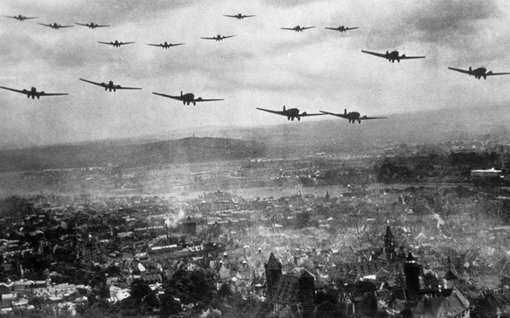

A második világháború az emberiség történetének legnagyobb és legtöbb halálos áldozattal járó fegyveres konfliktusa. A legelterjedtebb álláspont szerint kezdete az 1939. szeptember 1-jei, Lengyelország elleni német támadáshoz köthető.
A háborút azonban egyesek már 1937. július 7-től számítják, amikor kitört a második kínai–japán háború. A történelemtudósok egy része szerint ugyanakkor ezen két távol-keleti ország katonai konfliktusa még nem terjedt ki a világ több pontjára, így az helyi jellegűnek értelmezhető és a világháború szoros előzményének tekinthető.
A Második Világháború idején történő földarjzi változások/összecsapások
A II. világháború fegyverei, járművei Néhány szó a II. világháborúban alkalmazott kézifegyverekről, hadi- hajókról, repülőgépekről, harckocsikról. Meg még sok minden másról (Ide kattintva)